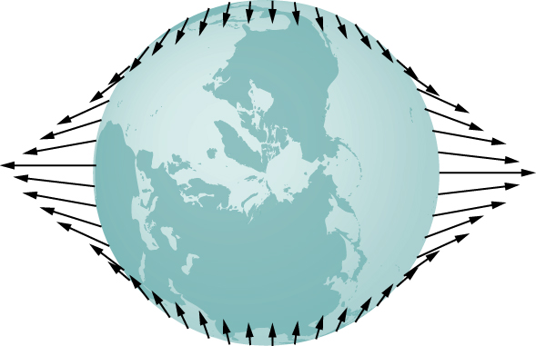
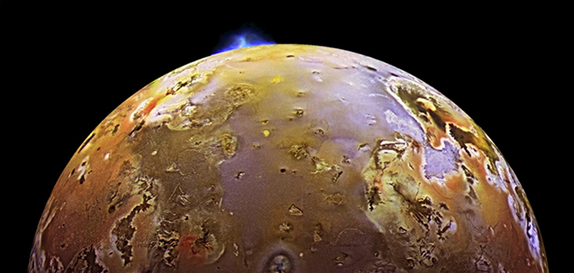
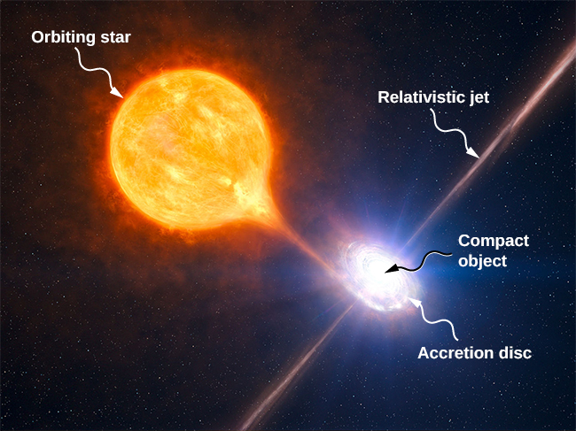

The origin of Earth’s ocean tides has been a subject of continuous investigation for over 2000 years. But the work of Newton is considered to be the beginning of the true understanding of the phenomenon. Ocean tides are the result of gravitational tidal forces. These same tidal forces are present in any astronomical body. They are responsible for the internal heat that creates the volcanic activity on Io, one of Jupiter’s moons, and the breakup of stars that get too close to black holes.
Lunar Tides
If you live on an ocean shore almost anywhere in the world, you can observe the rising and falling of the sea level about twice per day. This is caused by a combination of Earth’s rotation about its axis and the gravitational attraction of both the Moon and the Sun.
Let’s consider the effect of the Moon first. In [link], we are looking “down” onto Earth’s North Pole. One side of Earth is closer to the Moon than the other side, by a distance equal to Earth’s diameter. Hence, the gravitational force is greater on the near side than on the far side. The magnitude at the center of Earth is between these values. This is why a tidal bulge appears on both sides of Earth.
The tidal force stretches Earth along the line between Earth and the Moon. It is the difference between the gravitational force from the far side to the near side that creates the tidal bulge on both sides of the planet. Tidal variations of the oceans are on the order of few meters; hence, this diagram is greatly exaggerated.
The net force on Earth causes it to orbit about the Earth-Moon center of mass, located about 1600 km below Earth’s surface along the line between Earth and the Moon. The tidal force can be viewed as the difference between the force at the center of Earth and that at any other location. In [link], this difference is shown at sea level, where we observe the ocean tides. (Note that the change in sea level caused by these tidal forces is measured from the baseline sea level. We saw earlier that Earth bulges many kilometers at the equator due to its rotation. This defines the baseline sea level and here we consider only the much smaller tidal bulge measured from that baseline sea level.)
The tidal force is the difference between the gravitational force at the center and that elsewhere. In this figure, the tidal forces are shown at the ocean surface. These forces would diminish to zero as you approach Earth’s center.

Why does the rise and fall of the tides occur twice per day? Look again at [link]. If Earth were not rotating and the Moon was fixed, then the bulges would remain in the same location on Earth. Relative to the Moon, the bulges stay fixed—along the line connecting Earth and the Moon. But Earth rotates (in the direction shown by the blue arrow) approximately every 24 hours. In 6 hours, the near and far locations of Earth move to where the low tides are occurring, and 6 hours later, those locations are back to the high-tide position. Since the Moon also orbits Earth approximately every 28 days, and in the same direction as Earth rotates, the time between high (and low) tides is actually about 12.5 hours. The actual timing of the tides is complicated by numerous factors, the most important of which is another astronomical body—the Sun.
The Effect of the Sun on Tides
In addition to the Moon’s tidal forces on Earth’s oceans, the Sun exerts a tidal force as well. The gravitational attraction of the Sun on any object on Earth is nearly 200 times that of the Moon. However, as we show later in an example, the tidal effect of the Sun is less than that of the Moon, but a significant effect nevertheless. Depending upon the positions of the Moon and Sun relative to Earth, the net tidal effect can be amplified or attenuated.
[link] illustrates the relative positions of the Sun and the Moon that create the largest tides, called spring tides (or leap tides). During spring tides, Earth, the Moon, and the Sun are aligned and the tidal effects add. (Recall that the tidal forces cause bulges on both sides.) [link](c) shows the relative positions for the smallest tides, called neap tides. The extremes of both high and low tides are affected. Spring tides occur during the new or full moon, and neap tides occur at half-moon.
You can see one or two animations of the tides in motion.
(a and b) The spring tides occur when the Sun and the Moon are aligned, whereas (c) the neap tides occur when the Sun and Moon make a right triangle with Earth. (Figure is not drawn to scale.)
The Magnitude of the Tides
With accurate data for the positions of the Moon and the Sun, the time of maximum and minimum tides at most locations on our planet can be predicted accurately.
Visit this site to generate tide predictions for up to 2 years in the past or future, at more than 3000 locations around the United States.
The magnitude of the tides, however, is far more complicated. The relative angles of Earth and the Moon determine spring and neap tides, but the magnitudes of these tides are affected by the distances from Earth as well. Tidal forces are greater when the distances are smaller. Both the Moon’s orbit about Earth and Earth’s orbit about the Sun are elliptical, so a spring tide is exceptionally large if it occurs when the Moon is at perigee and Earth is at perihelion. Conversely, it is relatively small if it occurs when the Moon is at apogee and Earth is at aphelion.
The greatest causes of tide variation are the topography of the local shoreline and the bathymetry (the profile of the depth) of the ocean floor. The range of tides due to these effects is astounding. Although ocean tides are much smaller than a meter in many places around the globe, the tides at the Bay of Fundy ([link]), on the east coast of Canada, can be as much as 16.3 meters.
Boats in the Bay of Fundy at high and low tides. The twice-daily change in sea level creates a real challenge to the safe mooring of boats. (credit: modification of works by Dylan Kereluk)
Comparing Tidal Forces
Compare the Moon’s gravitational force on a 1.0-kg mass located on the near side and another on the far side of Earth. Repeat for the Sun and then compare the results to confirm that the Moon’s tidal forces are about twice that of the Sun.
Strategy
We use Newton’s law of gravitation given by [link]. We need the masses of the Moon and the Sun and their distances from Earth, as well as the radius of Earth. We use the astronomical data from Appendix D.
Solution
Substituting the mass of the Moon and mean distance from Earth to the Moon, we have
In the denominator, we use the minus sign for the near side and the plus sign for the far side. The results are
The Moon’s gravitational force is nearly 7% higher at the near side of Earth than at the far side, but both forces are much less than that of Earth itself on the 1.0-kg mass. Nevertheless, this small difference creates the tides. We now repeat the problem, but substitute the mass of the Sun and the mean distance between the Earth and Sun. The results are
We have to keep six significant digits since we wish to compare the difference between them to the difference for the Moon. (Although we can’t justify the absolute value to this accuracy, since all values in the calculation are the same except the distances, the accuracy in the difference is still valid to three digits.) The difference between the near and far forces on a 1.0-kg mass due to the Moon is
whereas the difference for the Sun is
Note that a more proper approach is to write the difference in the two forces with the difference between the near and far distances explicitly expressed. With just a bit of algebra we can show that
where and are the same to three significant digits, but their difference , equal to the diameter of Earth, is also known to three significant digits. The results of the calculation are the same. This approach would be necessary if the number of significant digits needed exceeds that available on your calculator or computer.
Significance
Note that the forces exerted by the Sun are nearly 200 times greater than the forces exerted by the Moon. But the difference in those forces for the Sun is half that for the Moon. This is the nature of tidal forces. The Moon has a greater tidal effect because the fractional change in distance from the near side to the far side is so much greater for the Moon than it is for the Sun.
Check Your Understanding Earth exerts a tidal force on the Moon. Is it greater than, the same as, or less than that of the Moon on Earth? Be careful in your response, as tidal forces arise from the difference in gravitational forces between one side and the other. Look at the calculations we performed for the tidal force on Earth and consider the values that would change significantly for the Moon. The diameter of the Moon is one-fourth that of Earth. Tidal forces on the Moon are not easy to detect, since there is no liquid on the surface.
Consider the last equation above. The values of and remain nearly the same, but the diameter of the Moon, , is one-fourth that of Earth. So the tidal forces on the Moon are about one-fourth as great as on Earth.
Other Tidal Effects
Tidal forces exist between any two bodies. The effect stretches the bodies along the line between their centers. Although the tidal effect on Earth’s seas is observable on a daily basis, long-term consequences cannot be observed so easily. One consequence is the dissipation of rotational energy due to friction during flexure of the bodies themselves. Earth’s rotation rate is slowing down as the tidal forces transfer rotational energy into heat. The other effect, related to this dissipation and conservation of angular momentum, is called “locking” or tidal synchronization. It has already happened to most moons in our solar system, including Earth’s Moon. The Moon keeps one face toward Earth—its rotation rate has locked into the orbital rate about Earth. The same process is happening to Earth, and eventually it will keep one face toward the Moon. If that does happen, we would no longer see tides, as the tidal bulge would remain in the same place on Earth, and half the planet would never see the Moon. However, this locking will take many billions of years, perhaps not before our Sun expires.
One of the more dramatic example of tidal effects is found on Io, one of Jupiter’s moons. In 1979, the Voyager spacecraft sent back dramatic images of volcanic activity on Io. It is the only other astronomical body in our solar system on which we have found such activity. [link] shows a more recent picture of Io taken by the New Horizons spacecraft on its way to Pluto, while using a gravity assist from Jupiter.
Dramatic evidence of tidal forces can be seen on Io. The eruption seen in blue is due to the internal heat created by the tidal forces exerted on Io by Jupiter. (credit: modification of work by NASA/JPL/University of Arizona)

For some stars, the effect of tidal forces can be catastrophic. The tidal forces in very close binary systems can be strong enough to rip matter from one star to the other, once the tidal forces exceed the cohesive self-gravitational forces that hold the stars together. This effect can be seen in normal stars that orbit nearby compact stars, such as neutron stars or black holes. [link] shows an artist’s rendition of this process. As matter falls into the compact star, it forms an accretion disc that becomes super-heated and radiates in the X-ray spectrum.
Tidal forces from a compact object can tear matter away from an orbiting star. In addition to the accretion disc orbiting the compact object, material is often ejected along relativistic jets as shown. (credit: modification of work by ESO/L. Calçada/M. Kornmesser)

The energy output of these binary systems can exceed the typical output of thousands of stars. Another example might be a quasar. Quasars are very distant and immensely bright objects, often exceeding the energy output of entire galaxies. It is the general consensus among astronomers that they are, in fact, massive black holes producing radiant energy as matter that has been tidally ripped from nearby stars falls into them.
Summary
Earth’s tides are caused by the difference in gravitational forces from the Moon and the Sun on the different sides of Earth.
Spring or neap (high) tides occur when Earth, the Moon, and the Sun are aligned, and neap or (low) tides occur when they form a right triangle.
Tidal forces can create internal heating, changes in orbital motion, and even destruction of orbiting bodies.
Conceptual Questions
As an object falls into a black hole, tidal forces increase. Will these tidal forces always tear the object apart as it approaches the Schwarzschild radius? How does the mass of the black hole and size of the object affect your answer?
Problems
(a) What is the difference between the forces on a 1.0-kg mass on the near side of Io and far side due to Jupiter? Io has a mean radius of 1821 km and a mean orbital radius about Jupiter of 421,700 km. (b) Compare this difference to that calculated for the difference for Earth due to the Moon calculated in [link]. Tidal forces are the cause of Io’s volcanic activity.
If the Sun were to collapse into a black hole, the point of no return for an investigator would be approximately 3 km from the center singularity. Would the investigator be able to survive visiting even 300 km from the center? Answer this by finding the difference in the gravitational attraction the black holes exerts on a 1.0-kg mass at the head and at the feet of the investigator.
19,800 N; this is clearly not survivable
Consider [link] in Tidal Forces. This diagram represents the tidal forces for spring tides. Sketch a similar diagram for neap tides. (Hint: For simplicity, imagine that the Sun and the Moon contribute equally. Your diagram would be the vector sum of two force fields (as in [link]), reduced by a factor of two, and superimposed at right angles.)
Glossary
neap tide
low tide created when the Moon and the Sun form a right triangle with Earth
spring tide
high tide created when the Moon, the Sun, and Earth are along one line
tidal force
difference between the gravitational force at the center of a body and that at any other location on the body; the tidal force stretches the body
![The figure is an illustration of the earth centered within an exaggerated ellipse whose major axis is horizontal. The moon is shown to the right of the earth, moving counterclockwise. The left side of the ellipse is labeled as High tide, with a note that says “on far side, moon pulls earth more than water, creating a high tide.” The right side of the ellipse is labeled as High tide, with a note that says “on near side, moon pulls water more than earth, creating a high tide.” The top and bottom of the ellipse are labeled “Low tide.”](CNX_UPhysics_13_06_MoonTides.jpg)
![Figure a shows the earth centered within a horizontal shaded ellipse labeled spring tide. The sun is positioned to the right of the earth and the moon is in line, in between the earth and sun, and orbits counterclockwise. Figure b shows the earth centered within a horizontal shaded ellipse labeled spring tide. The sun is positioned to the right of the earth and the moon is in line with the earth and sun but to the left of the earth, and orbits counterclockwise. Figure c shows the earth centered within a vertical shaded ellipse labeled neap tide. The sun is positioned to the right of the earth and the moon is below the earth, and orbits counterclockwise. The ellipse in part c has a noticeably smaller vertical major axis than the horizontal major axes of the ellipses in parts a and b.](CNX_UPhysics_13_06_MoreTides.jpg)